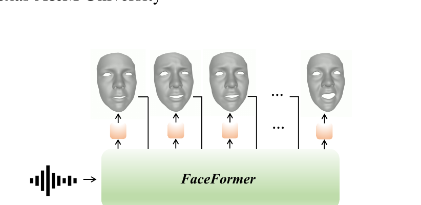
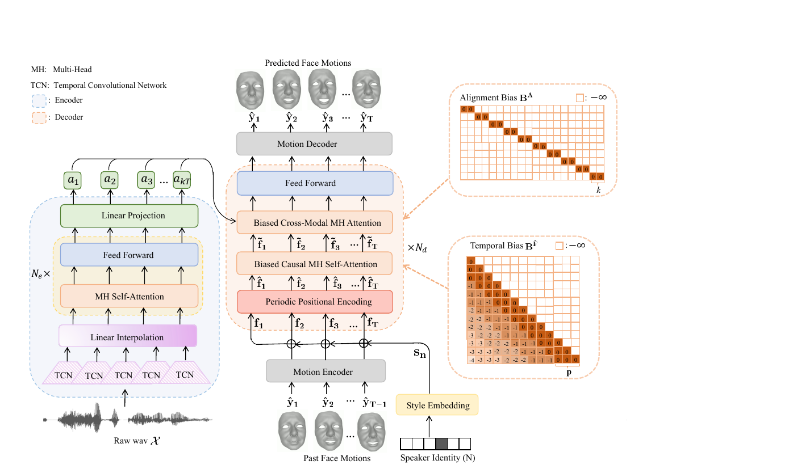
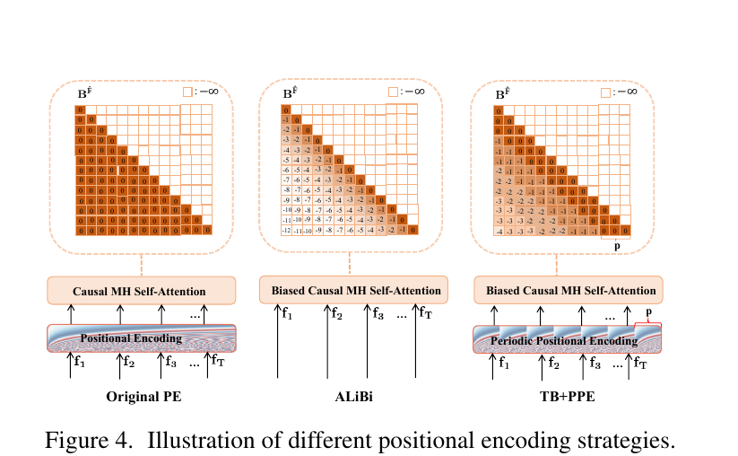
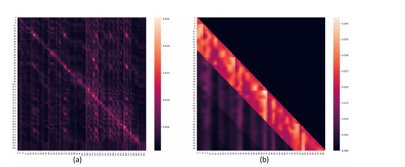

FaceFormer：用 Transformer 做语音驱动 3D 人脸动画 —— 论文总结¶
原文：FaceFormer: Speech-Driven 3D Facial Animation with Transformers（arXiv:2112.05329v4，2022-03-17，CVPR 2022） 快捷入口：摘要页 ｜ PDF ｜ CVPR Open Access ｜ 项目页与补充视频 ｜ 官方代码 EvelynFan/FaceFormer 作者：Yingruo Fan、Zhaojiang Lin、Jun Saito、Wenping Wang、Taku Komura（通讯） 机构：香港大学、港科大、Adobe Research、Texas A&M 说明：arXiv 没有这篇的 HTML 版，下文的章节链接都指向 PDF 页码（
#page=N，浏览器内置阅读器可以直接跳转）。图是我从 PDF 截出来的，放在 faceformer_figs/ 里。代码链接固定在提交dfaea81。
一、一句话概括¶
把“语音 → 3D 人脸网格序列”当成 seq2seq 问题来做。编码器用预训练的 wav2vec 2.0 看完整段音频；解码器是一个自回归的 Transformer，每一步根据“已生成的人脸 + 对齐好的音频特征 + 说话人风格”预测下一帧的全部顶点位移。解码器里有两个关键改动：一是对齐偏置（Alignment Bias），强制每个人脸帧只看自己时间上对应的那 k 个音频帧；二是周期性时间偏置 + 周期位置编码（TB+PPE，借鉴 ALiBi），让模型能外推到比训练样本更长的音频。

Figure 1：输入原始音频和一个中性 3D 脸，自回归地输出逐帧网格。
二、要解决的问题（§1 Introduction）¶
| 已有路线 | 代表 | 作者认为的不足 |
|---|---|---|
| 短音频窗口 → 当前帧 | VOCA（CVPR 2019）、Karras et al. 2017（NVIDIA，Audio2Face 的前身） | 只看约 0.5 s 上下文，上半脸表情有歧义；VOCA 的动作基本只在下半脸 |
| 建模整段序列 | MeshTalk（ICCV 2021） | 用 Mel 频谱，数据少时口型不准；要大量高精度 3D 数据才能泛化 |
| 从 2D 视频重建 3D 参数再训练 | 引文 [27, 47, 60] | 质量受 3D 重建精度限制 |
同时 3D 音视频配对数据极少（BIWI 只有 40 句、VOCASET 255 句），直接用原版 Transformer 会遇到四个问题：数据不够；跨模态对齐学不好；长程音频上下文需要保留；正弦位置编码对更长序列外推差。论文的四个设计正好一一对应这四点。
三、方法（§3，总览见 Figure 2）¶

形式化（Eq. 1）：ŷ_t = FaceFormer_θ(ŷ_<t, s_n, X)。其中 X 是原始音频，s_n 是说话人 n 的风格向量，ŷ_t 是第 t 帧所有顶点相对模板脸的位移。
3.1 编码器：wav2vec 2.0（§3.1）¶
- 结构就是 wav2vec 2.0：TCN 卷积特征提取器（约 49–50 Hz）+ 12 层 Transformer（768 维、12 头），最后加一个随机初始化的线性投影，降到 d 维（BIWI 用 d=128，VOCASET 用 d=64）。
- 在 TCN 后面加一个线性插值层，把音频帧率重采样成人脸帧率的整数倍 k，输出长度是 kT。
- 训练时只冻结 TCN，12 层 Transformer 一起微调。
- 编码器的自注意力是双向、全序列的。Figure 3(a) 显示它除了对角线附近，还会看较远的过去帧和未来帧。论文把这当作优点（长程上下文），但这也直接决定了模型不能流式运行，见第七节。
3.2 解码器（§3.2）¶
只有 1 层（见补充材料 §6），4 个头。每一步的输入是：
f_t = (W_f · ŷ_{t−1} + b_f) + s_n，第一步只放 s_n（Eq. 3）
也就是说，“上一帧的人脸经过 Motion Encoder 编码”再加上“说话人风格嵌入”（训练集说话人的 one-hot 过一层线性层）。
① 周期位置编码 PPE（§3.2.1, Eq. 2）
做法是把正弦位置编码里的 t 换成 t mod p，让位置编码每 p 帧循环一次。p 取 25（BIWI，正好 1 秒）或 30（VOCASET）。
动机是：直接把正弦 PE 换成 ALiBi 时，模型在 VOCASET 上会冻结成静止表情。原因是 ALiBi 不往输入里放任何位置信息，而相邻帧之间的运动差异又非常小，模型分不清时间顺序。PPE 给输入补回了“周期内的相对位置”。
② 带偏置的因果自注意力（§3.2.2, Eq. 5–7） 在注意力分数上加一个时间偏置：
B(i, j) = ⌊(i − j) / p⌋（当 j ≤ i），否则为 −∞
这就是按“周期”分块的 ALiBi：同一周期内的帧偏置都是 0，往前一个周期就 −1，以此类推，再乘以各头的固定斜率 m（4 个头分别是 2⁻²、2⁻⁴、2⁻⁶、2⁻⁸）。p=1 时退化成原版 ALiBi。直观上，最近 p 帧对当前帧影响最大。Figure 3(b) 里能看到明显的分块衰减。
③ 带偏置的跨模态注意力（§3.2.3, Eq. 8–9） 对齐偏置：B^A(i, j) = 0 当 ki ≤ j < k(i+1)，否则为 −∞。 它是一个严格的块对角掩码：第 i 个人脸帧只能看到与它同时刻的 k 个音频 token。因此所有长程音频上下文都必须先由编码器自注意力“搬”进这 k 个 token。消融实验里去掉这个掩码（“w/o AB”），模型会输出几乎不动的脸。
最后由 Motion Decoder（一层全连接）映射回 V×3 维顶点空间：BIWI 是 23370×3 = 70110 维，VOCASET 是 5023×3 = 15069 维。

Figure 4：Original PE、ALiBi、TB+PPE 三种策略的对比。
3.3 训练与推理（§3.3）¶
- 训练时也走自回归，不用 teacher forcing。作者发现“引导更少”的方式效果更好。代码里确实是
teacher_forcing=False，并且 batch size 是 1。 - 损失只有一项：逐顶点 MSE（Eq. 10）。没有速度损失，也没有唇部加权。
- 优化器 Adam，学习率 1e-4，训练 100 个 epoch。
- 推理时换 one-hot 就能切换说话风格。对于未见过的说话人，就把每个训练说话人的风格都生成一遍。
四、实验设置（§4.1）¶
| 数据集 | 规模 | 帧率 / 顶点数 | 划分 |
|---|---|---|---|
| BIWI | 14 人 × 40 句，只用“情感语境”那一半 | 25 fps / 23370 | Train 192 句（6 人）；Test-A 是 6 个见过的人，Test-B 是 8 个没见过的人 |
| VOCASET | 12 人 × 40 句，共 480 段 | 60 fps / 5023（FLAME 拓扑） | 沿用 VOCA 的划分（训练 8 人、验证 2 人、测试 2 人） |
基线是 VOCA（BIWI 上用官方代码重训；VOCASET 上直接用官方模型）和 MeshTalk（作者自己复现，并把 UNet 解码器的全连接层从 7 层减到 3 层，见补充 §7）。
五、结果¶
5.1 唇部误差（Table 1，BIWI-Test-A）¶
指标：每帧取所有唇部顶点 L2 误差的最大值，再在所有帧上求平均。这个指标沿用自 MeshTalk。
| 方法 | Lip Vertex Error（论文标注单位 ×10⁻⁴ mm） |
|---|---|
| VOCA | 7.6427 |
| MeshTalk | 6.7436 |
| FaceFormer | 5.3742 |
整篇论文只有这一个客观数字，而且只在 BIWI-Test-A 上报告，VOCASET 上没有给客观指标。
5.2 主观 A/B 测试（Table 2 / 3，AMT 众包，每对 3 人评）¶
| 对比 | BIWI-Test-B 真实感 | BIWI-Test-B 口型同步 | VOCA-Test 真实感 | VOCA-Test 口型同步 |
|---|---|---|---|---|
| Ours vs VOCA | 83.85% | 82.64% | 77.92% | 77.08% |
| Ours vs MeshTalk | 83.33% | 80.56% | 82.92% | 82.08% |
| Ours vs GT | 35.24% | 36.98% | 29.17% | 30.42% |
（数值是“选 FaceFormer”的比例，>50% 表示 FaceFormer 更受偏好。）作者解释赢 VOCA 的原因有两点：VOCA 的上半脸几乎不动，而且发 /b/ /m/ /p/ 时闭不上嘴。和真值相比仍有明显差距。
5.3 注意力可视化（§4.4 / Figure 3）¶

(a) 编码器自注意力：以对角线为主，同时也会看较远的过去和未来帧。(b) 解码器带偏置的因果注意力：按周期呈块状衰减。
5.4 消融（§4.5，全部只给视频，没有数字）¶
| 变体 | 现象 |
|---|---|
| 去掉编码器自注意力（TCN + 解码器） | 经常闭不上嘴，嘴部有抖动 |
| 不用 wav2vec 初始化 | 口型不同步，有抖动，收敛到差的解 |
| 解码器换成全连接或 LSTM | 口型不如 FaceFormer 稳定、不如它准 |
| 去掉对齐偏置 | 整段脸几乎不动（muted） |
| Original PE | 口型能对上，但静音段嘴唇抖动，音频越长越明显 |
| ALiBi | BIWI 上没影响，VOCASET 上冻结成静止表情 |
长音频泛化用了 15 段约 20 s 的 TED 音频（大约是训练平均时长的 4 倍以上），TB+PPE 对 Original PE 的偏好率是：真实感 57.78% ± 16.78%，口型同步 62.22% ± 10.18%（见 §4.5.2）。真实感的标准差很大，置信区间跨过了 50%。
5.5 作者自述的局限（§5）¶
自注意力的时间和显存都是平方复杂度，不适合实时应用。作者提出未来可以用 Longformer 或 Linformer 一类的高效注意力来改。
六、论文与代码 / 自身的不一致之处¶
我对照了官方代码（提交 dfaea81），发现下面这些出入：
- wav2vec 2.0 实际上不是纯自监督权重。 论文反复强调用的是“self-supervised pre-trained speech representations”，但代码加载的是
facebook/wav2vec2-base-960h，这是在 LibriSpeech 960h 上做过 CTC 有监督 ASR 微调的版本。它对音素的区分能力本来就比纯自监督的wav2vec2-base强，“音素信息丰富”的部分功劳应该算在 ASR 微调上。 - BIWI 实际上没做线性插值。 论文说 TCN 后接线性插值层，并写了 f_a = 49 Hz、k = ⌈f_a/f_m⌉。但代码对 BIWI 只是把约 50 Hz 的特征截断成 2T 帧（k=2），默认 50 Hz 恰好是 25 fps 的 2 倍；只有 VOCASET 才走
linear_interpolation(…, 50, 30)。 - VOCASET 实际用的是 30 fps，不是 60 fps。 论文说 VOCASET 是 60 fps，但代码把顶点每隔一帧取一帧（注释写着 “due to the memory limit”），音频也插值到 30 Hz，所以 k=1，对齐掩码就是纯对角线。p=30 也正好对应 30 fps 下的 1 秒。正文没有提这次降采样。
- FFN 维度不一致。 补充材料写 FF 层维度是 2048，代码里是
dim_feedforward=2*feature_dim，也就是 256（BIWI）或 128（VOCASET）。 - “长序列外推”被代码硬限制在 600 帧以内。 时间偏置矩阵和 PPE 都是按
max_seq_len=600预先算好的，所以最长只能到 24 s（BIWI）或 20 s（VOCASET），再长就会越界。论文的长音频实验用的是约 20 s 的 TED 片段，刚好卡在上限内。 - Eq. 8 的下标有错位。 正文规定 1 ≤ i ≤ t，但区间 ki ≤ j < k(i+1) 是按 0 起始写的。如果 i 从 1 开始，第一个音频块 j < k 就永远不会被看到。代码用的是 0 起始，没有这个问题。
- 唇部误差的单位不太可信。 “×10⁻⁴ mm”这个量级不合常理，而且论文没给公式，仓库里也没有评测脚本。后续 CodeTalker 沿用的实现里，这个指标取的是平方距离的最大值。所以对比这个数字时，最好只看相对大小。
- 证据比较单薄。 客观指标只有一个、只在一个测试集上；所有消融都只有视频，没有数字。“未见说话人”的主观评测是把每个训练风格各生成一遍（BIWI 是 32 句 × 6 种风格），同一句话相当于重复计了 6 次。MeshTalk 是作者自己复现并改了结构的版本，不是官方结果。
七、和你的对话交互研究的关系¶
1. 它不能直接放进全双工链路。 编码器是双向的，要先拿到整段音频才能开始。Figure 3(a) 里能看到它确实依赖未来帧。解码器每一步都要把整段历史重新算一遍（没有 KV cache），所以第 t 步的代价随 t 线性增长。在 Moshi 式的“边听边说、随时被打断”的场景里，这两点都不可用。如果要改成流式，至少要做三件事： - 把编码器换成因果的或分块的（或者直接复用 Moshi/Mimi 的隐状态）； - 给对齐偏置留 2–4 帧的前瞻。因为对齐掩码是块对角的，解码器本身没有任何前瞻，协同发音所需的“提前张嘴”全靠编码器提供； - 给解码器加 KV cache，并用硬滑窗（窗口取几个 p）代替无限历史。
2. 周期时间偏置可以缓解你担心的“上下文爆炸”。 B = ⌊(i−j)/p⌋·m 让远处历史的权重按指数衰减。斜率最小的头每过一个周期权重乘约 e^{-1/256}，衰减很慢；但斜率最大的头每过一个周期就乘 e^{-¼}。这其实就是在告诉你：人脸运动只需要最近几个周期的历史。在全双工的人脸流里，完全可以把它换成固定长度的窗口，让显存和延迟变成常数。这一点和 全双工语音模型对比_上下文与工具调用.md 里讨论的长上下文问题是同一类思路。
3. 它是 Moshi-Face 人脸 codec 的祖先。 FaceFormer 之后的 CodeTalker（CVPR 2023）沿用了它的数据、划分和 wav2vec 编码器，并把逐顶点回归换成 VQ-VAE 码本先验；Moshi-Face 又直接沿用了 CodeTalker 的 VQ-VAE。读 FaceFormer 能帮你搞清楚这条线上的数据格式（顶点相对模板的位移、BIWI/VOCASET 的帧率）和评测指标（LVE）是从哪里来的。
4. 与 Audio2Face-3D 的定位对比。 A2F-3D 走的是 Karras 2017 那条“固定窗口回归”路线：天然支持流式、延迟固定，但上下文短。FaceFormer 走的是“整句上下文 + 自回归”路线：口型闭合和上半脸更好，但只能离线。如果你在 流式Audio2Motor蒸馏方案_vs_A2F.md 里需要一个离线 teacher，FaceFormer（或 CodeTalker）可以作为 teacher 的候选之一，再蒸馏成流式 student。另外有两点可以借鉴：训练时做自回归 rollout 来减轻暴露偏差；以及“ALiBi 导致表情冻结”这个踩坑经验，它对流式 student 同样适用。
5. 它只覆盖了“说话的脸”。 FaceFormer 只生成说话人的脸。BIWI 和 VOCASET 都是对齐过的头部，没有头部姿态，也没有倾听时的表情和附和反应。风格靠训练说话人的 one-hot 控制，无法零样本生成新风格。对话场景里“听的时候脸在做什么”这一块，需要别的数据和模型来补。
八、链接汇总¶
本文
- 论文：arXiv 摘要 ｜ PDF v4 ｜ CVPR 2022 Open Access
- 项目页和补充视频：evelynfan.github.io/audio2face
- 代码：GitHub，关键位置：时间偏置 ｜ 对齐偏置 ｜ PPE ｜ 自回归推理循环
PDF 章节
§1 引言 ｜ §2 相关工作 ｜ §3 方法 ｜ §3.2 解码器 / Fig. 2 ｜ §3.2.3–3.3 ｜ §4 实验 / Table 1–3 ｜ §4.4–4.5 / Fig. 3 ｜ Fig. 4 / §5 ｜ 补充材料
本地图片


引用的关键工作
wav2vec 2.0 ｜ ALiBi ｜ VOCA ｜ MeshTalk ｜ Karras et al. 2017 ｜ Transformer ｜ Longformer ｜ Linformer ｜ wav2vec2-base-960h 权重
数据集
VOCASET ｜ BIWI 3D Audiovisual Corpus（论文 DOI）
后续工作
本目录里的相关笔记
Moshi-Face ｜ Audio2Face-3D 仓库 ｜ 流式蒸馏方案 ｜ 全双工上下文对比